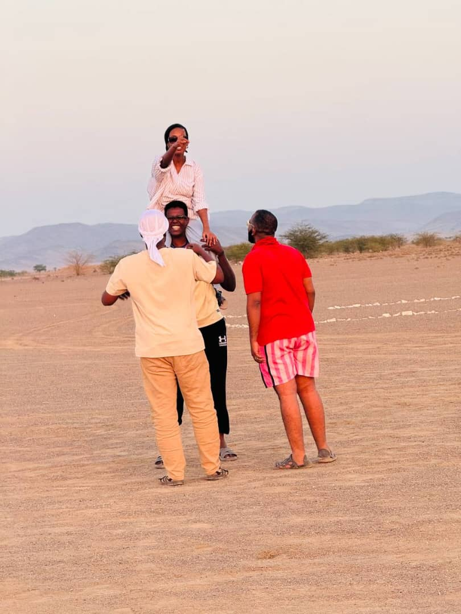

§4
Lieux signalés
Last known locations · Select a marker


Vingt-sept années de récidive documentée. Huit témoins ont accepté de parler. Le dossier s'ouvre aujourd'hui, et il ne se referme pas.
Twenty-seven years of documented repeat offending. Seven witnesses agreed to talk. The file opens today, and it does not close.
Subject profile
Cliché versé au dossier. Sujet souriant à la prise de vue. Aucun remord documenté à ce jour.
Sujet coopératif tant qu'on ne lui demande rien. Toute consigne formulée à l'impératif déclenche l'effet inverse. Reformuler en suggestion. Si échec, laisser croire que c'était son idée.
Seven witness statements · Click to declassify
Huit personnes ont déposé. Aucune n'a demandé l'anonymat, ce qui en dit long sur l'entourage.
Seven questions · How well do you actually know her
Last known locations · Select a marker

Recording 27-V · 00:00:22
Aucune circonstance atténuante retenue. Le tribunal note toutefois que la prévenue rend la vie de sept personnes nettement plus supportable, et recommande une année supplémentaire dans les mêmes conditions.
No mitigating circumstances found. The court notes, however, that the defendant makes life considerably more bearable for eight people, and recommends one additional year under identical conditions.